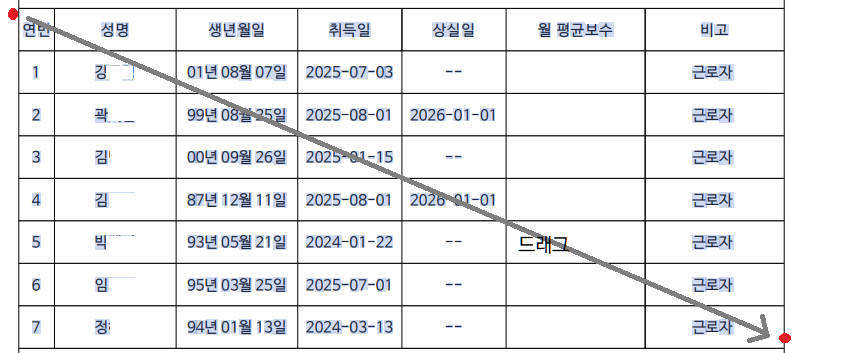

사업장 자격취득자명부 드래그 - 복사
기업이 제출한 PDF 파일에서 연번부터 마지막 근로자까지 전체를 드래그 후 복사합니다.
고용보험 명부를 엑셀 서식에 붙여넣는 방법
기업이 제출한 PDF 파일에서 연번부터 마지막 근로자까지 전체를 드래그 후 복사합니다.
2025년 자료는 왼쪽, 2024년 자료는 오른쪽 붙여넣기 칸에 넣습니다.
하단 기준에 따라 판별됩니다.
파란색 표 복사 버튼을 누르고 엑셀 표의 첫 번째 데이터 행에서 붙여넣습니다.
연번 제목 앞에서 시작해 마지막 근로자의 비고 칸 끝까지 전체를 대각선으로 드래그한 뒤 복사합니다.

재직 기준: 취득일이 2025-12-31 이하이며, 상실일이 없거나 2026-01-01 이상인 사람
고령자 기준: 1970-12-31 이전 출생 O / 1971-01-01 이후 출생 X
재직 기준: 취득일이 2024-12-31 이하이며, 상실일이 없거나 2025-01-01 이상인 사람
결과 항목: 번호와 성명만 순서대로 정리